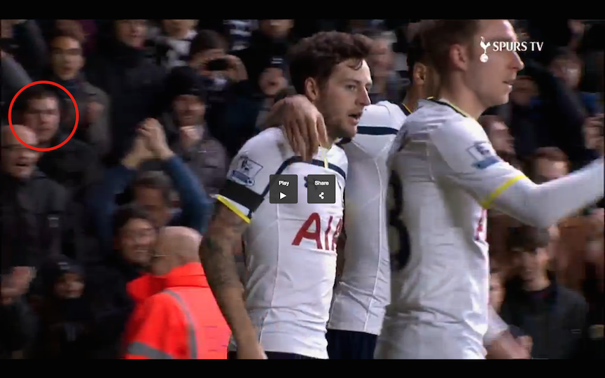

The two teams I care about most are Providence College (PC) basketball and Tottenham Hotspur which is a soccer team. Both teams had some of their best success in recent years.
Tottenham was able to finish third in the very competitive Barclay's Premier League. By finishing third they qualified for a competition called Champions League where you face the best of the best in all of Europe. They overcame expectations of finishing sixth by incredible effort and work rate as well as unrivaled team chemistry. Although Tottenham isn't one of the richest teams in England, they were able to surprise many people and I hope they do the same this year.
Similarly to Tottenham, PC has had some success recently. It all started when Ed Cooley was hired to be the head coach in 2011. It was a match made in heaven as Cooley was born in Providence, R.I and always dreamed to coach where he considered home. Cooley has been able to reinstate the program to what it once was, after 15 or so years of lackluster performances. He's been able to recruit high profile players which previous coaches couldn't and has taken PC to the highly sought after NCAA Tournament in three consecutive years. Cooley has also integrated a family dynamic to the team, which has attracted high profile recruits to PC. Without the family dynamic, they would have no interest in joining. With the future looking bright all PC fans hope that Cooley can continue his success.
As you can see I am devoted to sports as I traveled to England and went to a Tottenham Hotspur game. That's me on T.V!
